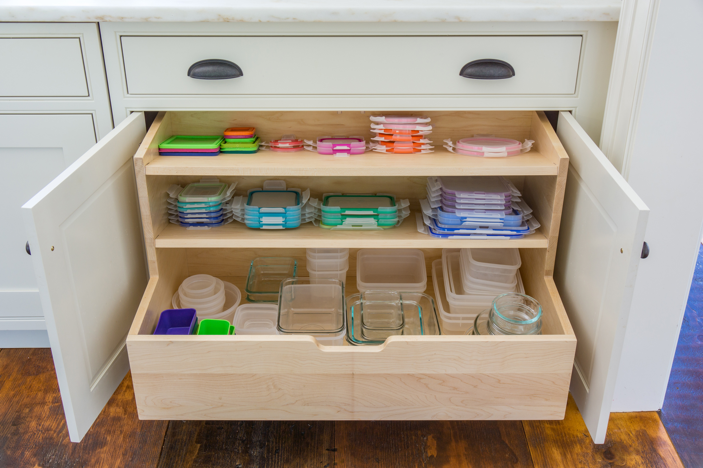
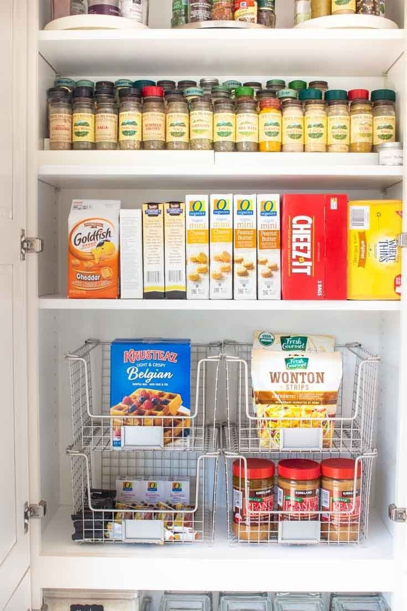
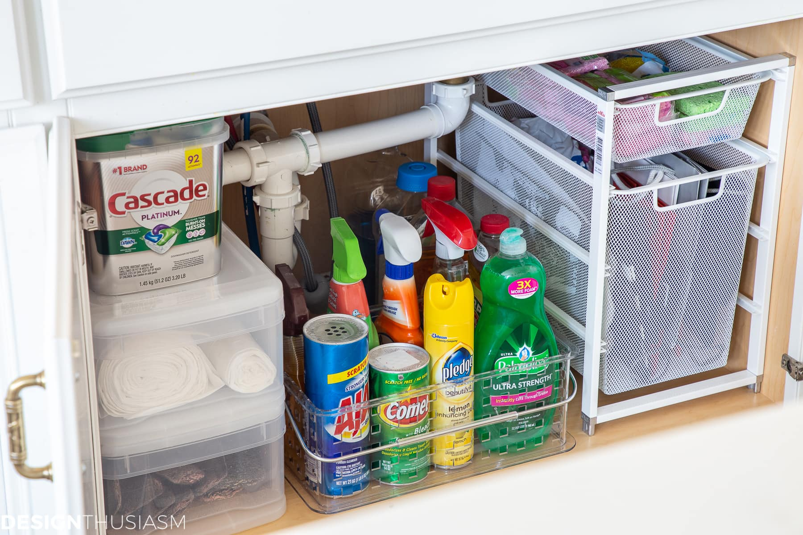

Ways to Organize Your Kitchen
Create efficient kitchen storage with drawer organizers, pot racks, cabinet organizers, rolling carts and refrigerator bins. Kitchen storage & organization is easy with spice racks, undershelf baskets, stacking canisters and stemware holders that utilize every inch of your pantry. Use hanging cookware racks to make the most of vertical space, and cabinet drawers to make organization and access easy. Store fruits, vegetables, ingredients and leftovers in our food storage containers, canisters, mason jars and tins. And choose from a variety of ergonomic, labor-saving gadgets, kitchen tool sets and soap dispensers.
  